Chapter 04: The Number Theory and Cryptography¶
约 2163 个字 14 张图片 预计阅读时间 11 分钟
Divisibility and Modular Arithmetic¶
Division¶
定义：如果 \(a\) 和 \(b\) 都为整数且 \(a\not =0\) ，如果存在一个整数 \(c\) 使得 \(b=ac\) （或者 \(b/a\) 是一个整数），那么称 \(a\) 整除 \(b\) （用 \(a|b\) 表示），\(a\) 是 \(b\) 的一个因子或除数，而 \(b\) 是 \(a\) 的一个倍数，用 \(a\nmid b\) 表示 \(a\) 不整除 \(b\) 。
定理：令 \(a,b,c\) 为整数，其中 \(a\not= 0\)
- 如果 \(a|b\) 和 \(a|c\) ，那么对任意整数 \(m\) 和 \(n\) 都有 \(a|(mb+nc)\)
- 如果 \(a|b\) ，那么对所有整数 \(c\) 都有 \(a|bc\)
- 如果 \(a|b\)，\(b|c\)，则 \(a|c\)
Division Algorithm¶
除法算法（Division Algorithm）：令 \(a\) 为整数，\(d\) 为正整数。则存在唯一的整数 \(q\) 和 \(r\) ，满足 \(0\leq r<d\)，使得 \(a=dq+r\) ，其中 \(d\) 称为除数（Divisor），\(a\) 称为被除数（Dividend），\(q\) 称为商（Quotient）（记为 \(q=a\space div\space d\)），\(r\) 称为余数（Remainder）（记为 \(r=a\space mod \space d\)）。
Congruence Relation¶
定义：如果 \(a\) 和 \(b\) 为整数而 \(m\) 为正整数，则当 \(m\) 整除 \(a-b\) 时称 \(a\) 模 \(m\) 同余（Congruent） \(b\)，用式子 \(a\equiv b(mod\space m)\) 表示，该式子被称为同余式（Congruence），\(m\) 被称为它的模（Modulus），用 \(a\not \equiv b(mod\space m)\) 表示 \(a\) 和 \(b\) 不是模 \(m\) 同余的。
定理：令 \(a\) 和 \(b\) 为整数，\(m\) 为正整数
- \(a\equiv b(mod\space m) \Leftrightarrow a\space mod\space m=b\space mod \space m \Leftrightarrow \exists k \in \Z,a=b+km\)
- 如果 \(a\equiv b(mod\space m),c\equiv d(mod\space m)\)，则 \(a+c\equiv b+d(mod\space m),ac\equiv bd(mod\space m)\)（一般地，当 \(d=c\) 时，\(a+c\equiv b+c(mod\space m),ac\equiv bc(mod\space m)\)）
- \((a+b)\space mod \space m=((a\space mod\space m)+(b\space mod \space m))mod\space m\)
- \(ab\space mod\space m=((a\space mod\space m)(b\space mod \space m))mod\space m\)
Arithmetic Modulo¶
在 \(\Z_m\) 上，即小于 \(m\) 的非负整数的集合 \(\{0,1,...,m-1\}\) 上定义算术运算，定义这些整数的加法（用 \(+_m\) 表示）：\(a+_mb=(a+b)mod\space m\)；定义这些整数的乘法（用 \(·_m\) 表示）：\(a·_mb=(a·b)mod\space m\)。这些运算被称为模 \(m\) 算术。
模 \(m\) 算术满足如下性质：
- 封闭性：如果 \(a\) 和 \(b\) 属于 \(\Z_m\)，则 \(a+_mb\) 和 \(a·_mb\) 也属于 \(\Z_m\)
- 结合律：如果 \(a\) 和 \(b\) 属于 \(\Z_m\)，则 \((a+_mb)+_mc=a+_m(b+_mc),(a·_mb)·_mc=a·_m(b·_mc)\)
- 交换律：如果 \(a\) 和 \(b\) 属于 \(\Z_m\)，则 \(a+_mb=b+_ma,a·_mb=b·_ma\)
- 单位元：元素 0 和 1 分别是模 \(m\) 加法和乘法的单位元。即如果 \(a\) 属于 \(\Z_m\)，则 \(a+_m0=0+_ma=a,a·_m1=1·_ma=a\)
- 加法逆元：如果 \(a\not =0\) 属于 \(\Z_m\)，则 \(m-a\) 是 \(a\) 的模 \(m\) 加法逆元，而 0 是其自身的加法逆元。即 \(a+_m(m-a)=0,0+_m0=0\)
- 分配律：如果 \(a,b\) 和 \(c\) 属于 \(\Z_m\)，则 \(a·_m(b+_mc)=(a·_mb)+_m(a·_mc),(a+_mb)·_mc=(a·_mc)+_m(b·_mc)\)
Integer Representations and Algorithms¶
Primes and Greatest Common Divisors¶
Primes¶
定义：如果一个大于 1 的整数 \(p\) 的正因子只是 1 和 \(p\)，那么这个整数被称为素数（Prime）；大于 1 但又不是素数的正整数被称为合数（Composite）
The Fundamental Theorem of Arithmetic¶
算术基本定理（The Fundamental Theorem of Arithmetic）：每一个大于 1 的整数都可以唯一地写为两个或多个素数的乘积，其中素数因子以非递减序排列。（即质因子分解）
Trial Division¶
定理：如果 \(n\) 是一个合数，那么 \(n\) 必有一个素因子小于等于 \(\sqrt{n}\)
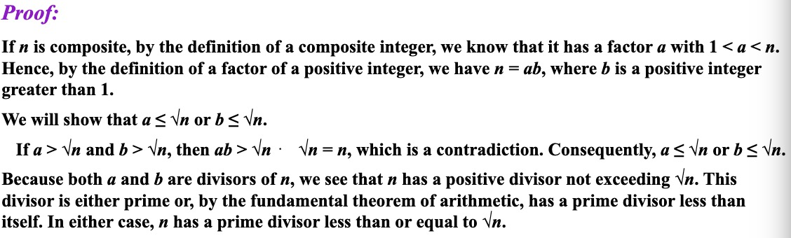
Infinitude of Primes¶
定理：存在无穷多个素数

Mersenne Primes¶
定义：如果一个素数被表示为 \(2^p-1\)，其中 \(p\) 为素数，那么这个素数被称为梅森素数（Mersenne Primes）
Distribution of Primes¶
素数定理（Prime Number Theorem）：当 \(x\) 无限增长时，不超过 \(x\) 的素数个数（记为 \(\pi(x)\)）与 \(\frac{x}{\ln x}\) 之比趋近于 1。
Greatest Common Divisor¶
定义：令 \(a\) 和 \(b\) 是两个整数，不全为 0。 能使 \(d|a\) 和 \(d|b\) 的最大整数 \(d\) 称为 \(a\) 和 \(b\) 的最大公约数（Greatest Common Divisor），记作 \(\gcd(a,b)\)。
如果整数 \(a\) 和 \(b\) 的最大公约数是 1，那么称它们是互素的（Relatively Prime）。
更一般地，当 \(1\leq i<j\leq n\) 时都有 \(\gcd(a_i,a_j)=1\) ，那么称整数 \(a_1,a_2,...,a_n\) 是两两互素的（Pairwise Relatively Prime）。
Least Common Multiple¶
定义：正整数 \(a\) 和 \(b\) 的最小公倍数（Least Common Multiple）是能被 \(a\) 和 \(b\) 整除的最小正整数，记作 \(lcm(a,b)\) 。
Prime Factorizations¶
假设 \(a\) 和 \(b\) 的质因数分解式（Prime Factorizations）为：
\(a=p_1^{a_1}p_2^{a_2}...p_n^{a_n},b=p_1^{b_1}p_2^{b_2}...p_n^{b_n}\)
那么 \(a\) 和 \(b\) 的最大公约数可被表示为：\(\gcd(a,b)=p_1^{\min(a_1,b_1)}p_2^{\min(a_2,b_2)}...p_n^{\min(a_n,b_n)}\)
最小公倍数可被表示为：\(lcm(a,b)=p_1^{\max(a_1,b_1)}p_2^{\max(a_2,b_2)}...p_n^{\max(a_n,b_n)}\)
\(ab=\gcd(a,b)\times lcm(a,b)\)
Euclidean Algorithm¶
令 \(a=bq+r\)，其中 \(a,b,q\) 和 \(r\) 均为整数。则 \(\gcd(a,b)=\gcd(b,r)\)

欧几里得算法（Euclidean Algorithm）：辗转相除法求最大公约数。（当 \(a\geq b\) 时时间复杂度为 \(O(\log\space b)\)
gcds as Linear Combinations¶
贝祖定理（Bézout’s Theorem）：如果 \(a\) 和 \(b\) 为正整数，则存在整数 \(s\) 和 \(t\) 使得 \(\gcd(a,b)=sa+tb\)，其中 \(s\) 和 \(t\) 被称为 \(a\) 和 \(b\) 的贝祖系数（Bézout’s Coefficients），等式被称为贝祖恒等式。
e.g. 将 \(\gcd(252,198)=18\) 表达为贝祖恒等式。
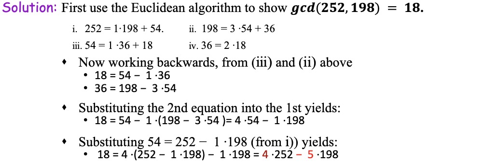
由贝祖定理可以推导出如下定理：
- 如果 \(a,b\) 和 \(c\) 为正整数，使得 \(\gcd(a,b)=1\) 且 \(a|bc\)，则 \(a|c\)
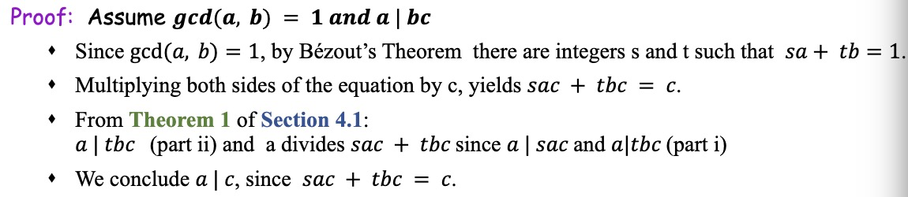
-
如果 \(p\) 是素数，且 \(p|a_1a_2...a_n\)，其中 \(a_i\) 为整数，则对于某个 \(i\)，\(p|a_i\)
-
令 \(m\) 为正整数，\(a,b\) 和 \(c\) 为整数。如果 \(ac\equiv bc(mod\space m)\) 且 \(\gcd(c,m)=1\)，则 \(a\equiv b(mod\space m)\)

Solving Congruences¶
Linear Congruences¶
定义：具有形式 \(ax\equiv b(mod\space m)\) 的同余方程（其中 \(m\) 为正整数，\(a\) 和 \(b\) 为整数，\(x\) 为变量）被称为线性同余方程（Linear Congruences）
Inverse of a modulo m¶
如果存在一个整数 \(\overline{a}\)，使得 \(\overline{a}a\equiv 1(mod\space m)\)，那么称整数 \(\overline{a}\) 为 \(a\) 模 \(m\) 的乘法逆元（Inverse of \(a\) modulo \(m\)，简称逆）
定理：如果 \(a\) 和 \(m\) 为互素的整数且 \(m>1\)，则 \(a\) 模 \(m\) 的逆存在。更进一步地，这个模 \(m\) 的逆是唯一的。（即存在唯一小于 \(m\) 的正整数 \(\overline{a}\) 是 \(a\) 模 \(m\) 的逆，并且 \(a\) 模 \(m\) 的其他每个逆均和 \(\overline{a}\) 模 \(m\) 同余）
证明：由 \(\gcd(a,m)=1\) 及贝祖定理得存在整数 \(s\) 和 \(t\) 使得 \(sa+tm=1\)，即 \(sa+tm\equiv 1(mod\space m)\)，由 \(tm\equiv 0(mod\space m)\)，则 \(sa\equiv 1(mod\space m)\)，即 \(s\) 为 \(a\) 模 \(m\) 的逆。
e.g.1. 找到 3 模 7 的逆。
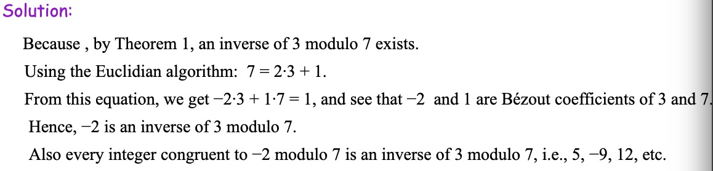
e.g.2. 找到 101 模 4620 的逆。
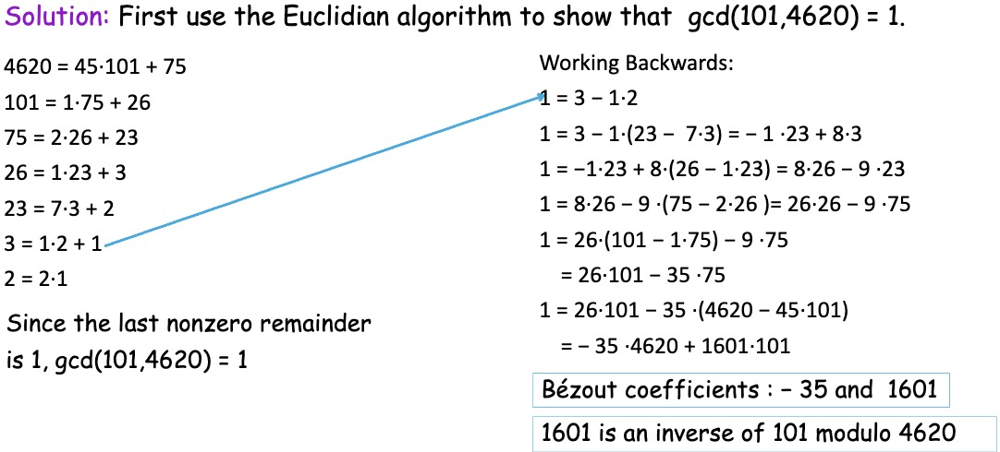
Using Inverses to Solve Congruences¶
e.g. 解同余方程 \(3x\equiv 4(mod\space 7)\)
由 4.4.2 e.g.1. 得 -2 是 3 模 7 的逆，在同余式两边同乘 -2 得 \(-2\times3x\equiv -2\times4(mod\space 7)\)，因为 \(-6\equiv 1(mod\space 7)\) 且 \(-8\equiv 6(mod\space 7)\)，所以如果 \(x\) 是解，则有 \(x\equiv -8\equiv 6(mod\space 7)\)
The Chinese Remainder Theorem¶
中国剩余定理（The Chinese Remainder Theorem）：令 \(m_1,m_2,...,m_n\) 为大于 1 的两两互素的正整数，而 \(a_1,a_2,...,a_n\) 是任意整数。则同余方程组
有唯一的模 \(m=m_1m_2...m_n\) 的解（即存在一个满足 \(0\leq x\leq m\) 的解 \(x\)，而所有其他的解均与此解模 \(m\) 同余）
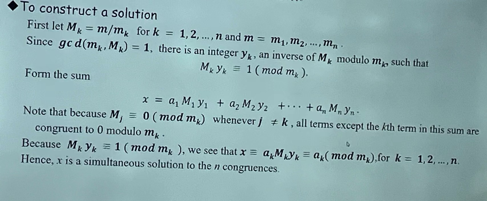
e.g. 求解同余方程组
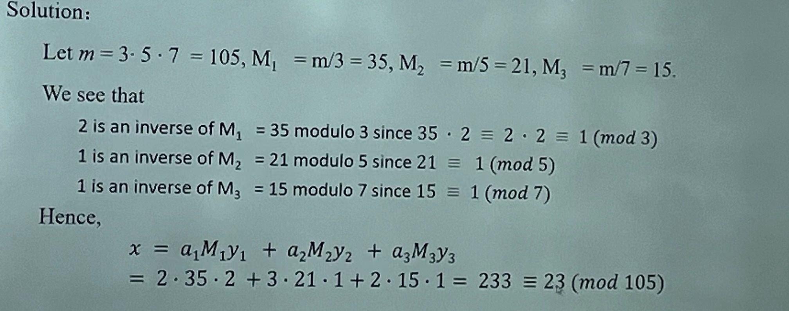
Back Substitution¶
回代方法是另一种求解同余方程组的方法。
e.g. 求解同余方程组
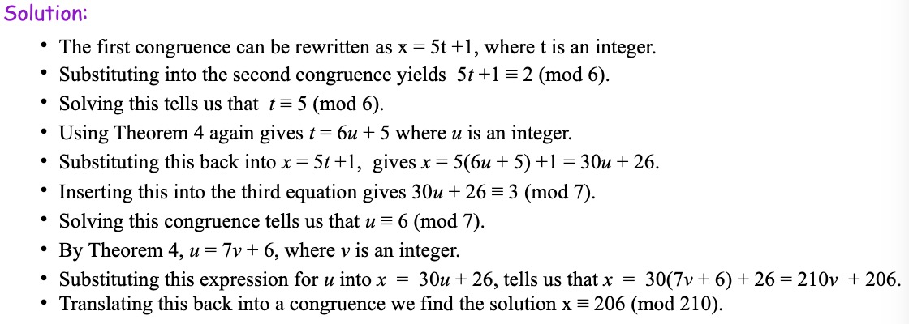
Computer Arithmetic with Large Integers¶
假定 \(m_1,m_2,...m_n\) 是两两互素的模数，并令 \(m\) 为其乘积。根据中国剩余定理可以证明满足 \(0\leq a<m\) 的整数 \(a\) 可唯一地表示为一个 \(n\) 元组，其元素由 \(a\) 除以 \(m_i\) 的余数组成（\(i=1,2,..n\)）。即 \(a\) 可以唯一地表示为 \((a\space mod\space m_1,a\space mod\space m_2,...,a\space mod\space m_n)\)（被用于处理大整数）
e.g. 利用模数为 \(99,98,97,95\) 来寻找 \(123684\) 和 \(413456\) 的和。
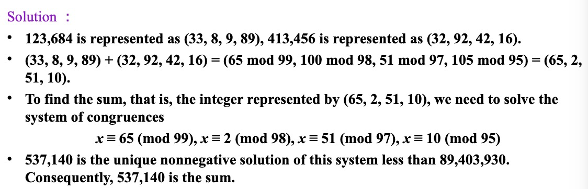
Fermat's Little Theorem¶
费马小定理（Fermat's Little Theorem）：如果 \(p\) 为素数，\(a\) 是一个不能被 \(p\) 整除的整数，则 \(a^{p-1}\equiv 1(mod\space p)\)。更一般地，对每个整数 \(a\) 都有 \(a^p\equiv a(mod\space p)\)。
e.g. 求 \(7^{222}\space mod \space 11\)
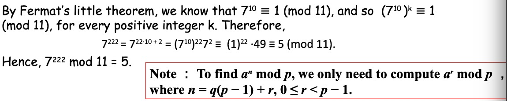
Pseudoprimes¶
定义：令 \(b\) 是一个正整数。如果 \(n\) 是一个正合数且 \(b^{n-1}\equiv 1(mod\space n)\)，则 \(n\) 称为以 \(b\) 为基数的伪素数（Pseudoprimes）
卡米切尔数（Carmichael Numbers）：一个正合数 \(n\) 如果对于所有满足 \(\gcd(b,n)=1\) 的正整数 \(b\) 都有同余式 \(b^{n-1}\equiv 1(mod\space n)\) 成立，则被称为卡米切尔数。
e.g. 561 是一个卡米切尔数。
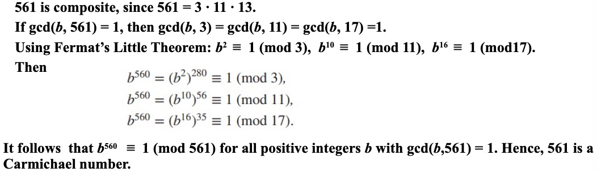